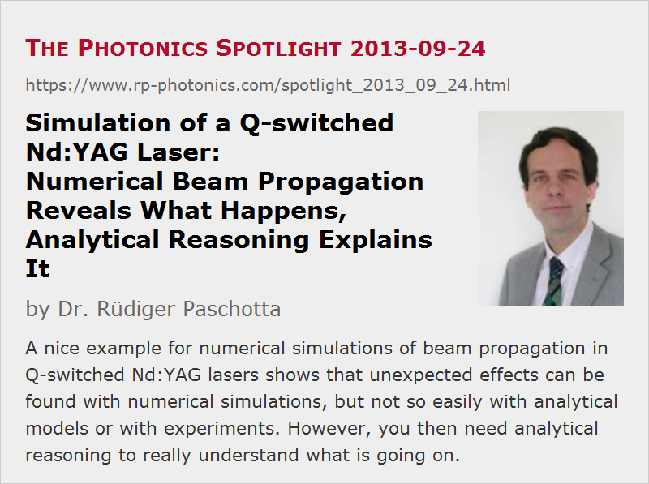

Simulation of a Q-switched Nd:YAG Laser:
Numerical Beam Propagation Reveals What Happens, Analytical Reasoning Explains It
Posted on 2013-09-24 as a part of the Photonics Spotlight (available as e-mail newsletter!)
Permanent link: https://www.rp-photonics.com/spotlight_2013_09_24.html
Author: Dr. Rüdiger Paschotta, RP Photonics Consulting GmbH
Abstract: A nice example for numerical simulations of beam propagation in Q-switched Nd:YAG lasers shows that unexpected effects can be found with numerical simulations, but not so easily with analytical models or with experiments. However, you then need analytical reasoning to really understand what is going on.

Ref.: case study on a Q-switched laser; R. Paschotta, “Beam quality deterioration of lasers caused by intracavity beam distortions”, Opt. Express 14 (13), 6069 (2006)
Laser modeling is often based on certain assumptions, which might not always be well fulfilled in practice. This is particularly the case for analytical models, which often require more assumptions in order to keep the problem manageable. Purely numerical simulations are better in this respect. Here, I present a nice example for that.
In simulations of laser performance, we often assume that we get a certain beam size – for example, the size of the fundamental resonator mode. For most bulk lasers with stable transverse single-mode operation, this is a well fulfilled assumption. I wondered, however, whether gain guiding in a Q-switched laser might have a significant effect. After all, the laser gain is often pretty high in such a laser, so that gain guiding might pull the beam size away from that of the fundamental mode – presumably to a smaller value. As strong gain saturation then sets in, the gain guiding effect changes during pulse formation, making things somewhat complicated.
The way to check such things is, of course, to numerically simulate the pulse formation – not just the dynamics of the optical power, but of the full beam profile. The new version V5 of our RP Fiber Power software is a great tool for such things, even though it has actually be designed for fiber lasers and amplifiers, not for bulk lasers. One simply defines the refractive index profile and the gain profile for the bulk laser resonator, just as if it were a piece of fiber. In that case, it doesn't form a waveguide, except if one also includes thermal lensing, which I didn't do here in order to focus on gain guiding. (It is one of the nice feature of numerical tests that you can easily eliminate effects which you are not interested in at the moment.)
The results first came out pretty much as one might expect them. A nice pulse was generated, when a weak seed beam was injected into the resonator after pumping the crystal. (One might also simulate the start-up from quantum noise, but here I started up with a clean seed beam as I was interested only in what happens when the powers get large and gain saturation sets in.) Here is the evolution of output power and beam radius:
As expected, I saw some moderate fluctuations of beam size:
The beam, starting with a Gaussian beam fitting the resonator mode (without gain guiding), quickly adapted to a somewhat smaller size due to the gain guiding. (Nevertheless, the second-moment-based beam radius actually gets somewhat larger due to wings of the profile.) When the pulse maximum was reached after 13 resonator round-trips, the beam got larger and finally settled at a size close to the resonator mode size.
Then I did the same again for modified values of the resonator length. There was an air gap of initially 20 mm between the laser crystal and the right end mirror. When this was increased up to 30 mm, the mode size hardly changed at all. Therefore, nobody would have been surprised to see that for 30 mm air gap width one gets quite the same as before. However, for a spacing of just 25 mm – not for 23 or 27 mm – something strange happened:
One can see that now the beam shrinks substantially during the pulse build-up, and later evolves into a kind of donut shape. Although that shape is rather pronounced, it would be difficult to detect experimentally, as that requires a time-resolved measurement. (The temporarily integrated beam profile, weighted with the optical power, does not show much – just a certain deviation from a Gaussian beam profile.) If one would put a photodiode at different portions of the beam, one would find different temporal pulse shapes and durations.
Apparently, the laser resonator is substantially more sensitive to the gain guiding effect for that particular resonator length – but why is that? The explanation is far from obvious. A resonator design analysis (done with the RP Resonator software) shows that just for 25 mm air gap size, the Gouy phase shift of the resonator per round trip becomes 1.59 rad, which is close to π/2 (= 1.57 rad). A consequence of that is that the TEM40 and TEM22 modes have resonance frequencies which coincide with resonances of the TEM00 fundamental mode. At this point, some resonant mode coupling can occur, which has a strong impact on the beam profiles (see R. Paschotta, “Beam quality deterioration of lasers caused by intracavity beam distortions”, Opt. Express 14 (13), 6069 (2006)).
This example shows that substantial effects, which might impact performance and also applications of the laser beam, could easily stay hidden with analytical simulations, requiring assumptions such as a constant beam size. Moreover, even in experiments one would probably not recognize what is going on – maybe only that the performance is not quite as good as expected. It would then be very hard to find out what's the matter.
By the way, I wouldn't say that the numerical approach is always better – ideally, you are able to use both approaches. In our example case, numerical modeling brings up interesting details, but only analytical considerations (see the cited paper) can well explain them.
You can read a more comprehensive description of the model and some technical details on the page with the detailed case study for the Q-switched laser.
This article is a posting of the Photonics Spotlight, authored by Dr. Rüdiger Paschotta. You may link to this page and cite it, because its location is permanent. See also the RP Photonics Encyclopedia.
Note that you can also receive the articles in the form of a newsletter or with an RSS feed.
Questions and Comments from Users
Here you can submit questions and comments. As far as they get accepted by the author, they will appear above this paragraph together with the author’s answer. The author will decide on acceptance based on certain criteria. Essentially, the issue must be of sufficiently broad interest.
Please do not enter personal data here; we would otherwise delete it soon. (See also our privacy declaration.) If you wish to receive personal feedback or consultancy from the author, please contact him e.g. via e-mail.
By submitting the information, you give your consent to the potential publication of your inputs on our website according to our rules. (If you later retract your consent, we will delete those inputs.) As your inputs are first reviewed by the author, they may be published with some delay.
|  |
If you like this page, please share the link with your friends and colleagues, e.g. via social media:
These sharing buttons are implemented in a privacy-friendly way!